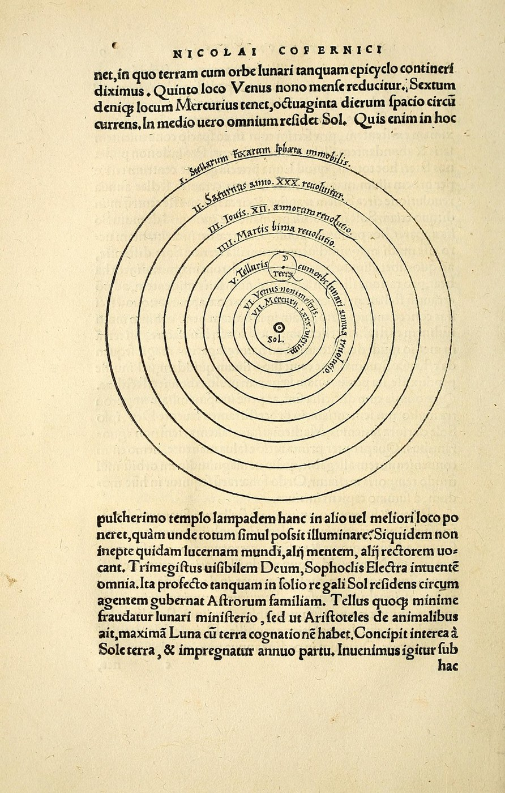

De revolutionibus orbium coelestium: The Sun-Centred Diagram
Nicolaus Copernicus · 1543 · Smithsonian Libraries
Free to use
A substantial part of the book was written by the 1530s, but Copernicus hesitated to publish and gave way only under pressure from Georg Joachim Rheticus, a young mathematician who had come to study with him in 1539. Johannes Petreius printed it in Nuremberg in 1543, just before Copernicus's death. The first printing of 400 copies did not sell out. An unsigned preface calling the system a mere aid to calculation was added without authority by Andreas Osiander, who supervised the printing.
Open in The ArtchiveFull-size file ↗
More like this